library(tidyverse)
library(sf)
library(sp)
library(spdep)
library(spatialreg)
library(GWmodel)
library(ranger)
library(readxl)
library(patchwork)
library(broom)
set.seed(42)
DATA_DIR <- "Data"
OUT_DIR <- file.path(tempdir(), "mod07_spatial_ml")
dir.create(OUT_DIR, showWarnings = FALSE, recursive = TRUE)
theme_set(
theme_minimal(base_size = 11) +
theme(
plot.background = element_rect(fill = "white", colour = NA),
panel.background = element_rect(fill = "white", colour = NA),
panel.grid.minor = element_blank(),
axis.text = element_blank(),
axis.title = element_blank(),
axis.ticks = element_blank()
)
)
YEAR_MIN <- 1998
YEAR_MAX <- 2010
COVARIATES <- c("SMOKING", "POVERTY", "PM25", "NO2", "SO2")
TARGET <- "RATE" # lung & bronchus cancer mortality rate (per 100k)
Health Analytics with R · Module 07: Geospatial & Spatial Epidemiology
Learning objectives - Load county-level lung & bronchus cancer (LBC) mortality data and join to US county boundaries - Conduct exploratory data analysis (EDA) for Northeast (NE) counties, 1998–2010 - Map yearly and period-mean LBC mortality rates (RATE) with choropleths - Detect hot/cold spots with Getis-Ord Gi* - Compute bivariate Local Moran’s I (LBC mortality vs poverty) - Fit models with spatially lagged exogenous (SLX) and endogenous (SAR) terms - Compare spatial lag (SAR) and spatial error (SEM) specifications - Estimate geographically weighted correlation (GWCORR) - Fit Geographically Weighted OLS (GW-OLS) and map local coefficients - Fit Geographically Weighted Random Forest (GW-RF) and map global/local feature importance
Data: Data/data_1998_2010_long_lbc.csv, Data/US_COUNTY.shp (+ sidecar files), Data/2025 County Health Rankings Data - v4.xlsx
Region: Northeast US counties only · Period: 1998–2010 (period means for modelling)
Estimated time: 4 hours | Level: Advanced
Libraries: sf, spdep, spatialreg, GWmodel, ranger, readxl, ggplot2
1. Setup & Data Loading
We use county FIPS codes to join longitudinal LBC mortality and environmental covariates to the US county shapefile, subset to the Northeast census region, and compute 1998–2010 period means for spatial modelling. Contemporary County Health Rankings (CHR 2025) measures are joined as a supplementary SES/access layer.
# Load longitudinal LBC data
lbc <- read_csv(file.path(DATA_DIR, "data_1998_2010_long_lbc.csv"), show_col_types = FALSE)
lbc <- lbc %>% filter(Year >= YEAR_MIN, Year <= YEAR_MAX) %>% mutate(FIPS = as.integer(FIPS))
cat(sprintf("Long format rows: %s | Years: %d–%d\n",
format(nrow(lbc), big.mark = ","), min(lbc$Year), max(lbc$Year)))Long format rows: 40,391 | Years: 1998–2010print(head(lbc, 3))# A tibble: 3 × 10
FIPS X Y Year SMOKING POVERTY PM25 NO2 SO2 RATE
<int> <dbl> <dbl> <dbl> <dbl> <dbl> <dbl> <dbl> <dbl> <dbl>
1 1001 872679. 1094433. 1998 27 11.3 17.1 1.38 0.057 90.6
2 1001 872679. 1094433. 1999 26 11.4 15.4 1.04 0.055 90.4
3 1001 872679. 1094433. 2000 26 10.5 14.0 1.47 0.054 89.5# Period means by county
mean_df <- lbc %>%
group_by(FIPS) %>%
summarise(across(all_of(c(TARGET, COVARIATES)), ~ mean(.x, na.rm = TRUE)),
.groups = "drop") %>%
rename(RATE_mean = RATE)
# Yearly county means (for temporal maps)
yearly <- lbc %>%
group_by(FIPS, Year) %>%
summarise(RATE = mean(RATE, na.rm = TRUE), .groups = "drop")
# County boundaries
counties <- st_read(file.path(DATA_DIR, "US_COUNTY.shp"), quiet = TRUE)
counties$FIPS_int <- as.integer(counties$FIPS)
cat(sprintf("\nShapefile counties: %s | CRS: %s\n",
format(nrow(counties), big.mark = ","), st_crs(counties)$input))
Shapefile counties: 3,108 | CRS: NAD_1983_Albersprint(table(counties$REGION))
Midwest Northeast South West
1055 217 1422 414 # Subset Northeast and join period means
ne <- counties %>% filter(REGION == "Northeast")
gdf <- ne %>%
left_join(mean_df, by = c("FIPS_int" = "FIPS")) %>%
filter(!is.na(RATE_mean))
# US Albers Equal Area for mapping & distances
if (is.na(st_crs(gdf))) st_crs(gdf) <- 5070
gdf <- st_transform(gdf, 5070)
gdf$centroid_x <- st_coordinates(st_centroid(gdf))[, 1]Warning: st_centroid assumes attributes are constant over geometriesgdf$centroid_y <- st_coordinates(st_centroid(gdf))[, 2]Warning: st_centroid assumes attributes are constant over geometriescoords <- cbind(gdf$centroid_x, gdf$centroid_y)
cat(sprintf("Northeast counties with data: %d\n", nrow(gdf)))Northeast counties with data: 217print(st_drop_geometry(gdf) %>%
select(STATE, COUNTY, RATE_mean, all_of(COVARIATES)) %>%
summary()) STATE COUNTY RATE_mean SMOKING
Length :217 Length :217 Min. :40.08 Min. :16.28
N.unique : 9 N.unique :176 1st Qu.:58.19 1st Qu.:22.22
N.blank : 0 N.blank : 0 Median :62.54 Median :24.75
Min.nchar: 5 Min.nchar: 10 Mean :62.60 Mean :24.43
Max.nchar: 13 Max.nchar: 21 3rd Qu.:67.70 3rd Qu.:26.85
Max. :82.05 Max. :30.06
POVERTY PM25 NO2 SO2
Min. : 3.254 Min. : 5.094 Min. : 0.520 Min. :0.0004615
1st Qu.: 8.708 1st Qu.: 8.594 1st Qu.: 1.559 1st Qu.:0.0113846
Median :10.815 Median : 9.490 Median : 2.494 Median :0.0389231
Mean :10.968 Mean : 9.871 Mean : 3.120 Mean :0.0662538
3rd Qu.:13.462 3rd Qu.:11.423 3rd Qu.: 3.719 3rd Qu.:0.0749231
Max. :27.577 Max. :13.733 Max. :15.569 Max. :0.4706923 # County Health Rankings 2025 — contemporary smoking, uninsured, PM2.5, poverty
chr_sel <- read_excel(
file.path(DATA_DIR, "2025 County Health Rankings Data - v4.xlsx"),
sheet = "Select Measure Data", skip = 1
) %>%
transmute(
FIPS = as.integer(FIPS),
chr_uninsured = `% Uninsured`,
chr_pm25 = `Average Daily PM2.5`,
chr_child_pov = `% Children in Poverty`,
chr_pcp_rate = `Primary Care Physicians Rate`
) %>%
filter(!is.na(FIPS), FIPS %% 1000 != 0) # drop state totals (xx000)New names:
• `Unreliable` -> `Unreliable...4`
• `95% CI - Low` -> `95% CI - Low...7`
• `95% CI - High` -> `95% CI - High...8`
• `National Z-Score` -> `National Z-Score...9`
• `95% CI - Low` -> `95% CI - Low...39`
• `95% CI - High` -> `95% CI - High...40`
• `National Z-Score` -> `National Z-Score...41`
• `Unreliable` -> `Unreliable...42`
• `95% CI - Low` -> `95% CI - Low...44`
• `95% CI - High` -> `95% CI - High...45`
• `National Z-Score` -> `National Z-Score...46`
• `95% CI - Low` -> `95% CI - Low...69`
• `95% CI - High` -> `95% CI - High...70`
• `National Z-Score` -> `National Z-Score...71`
• `95% CI - Low` -> `95% CI - Low...73`
• `95% CI - High` -> `95% CI - High...74`
• `National Z-Score` -> `National Z-Score...75`
• `National Z-Score` -> `National Z-Score...77`
• `National Z-Score` -> `National Z-Score...84`
• `National Z-Score` -> `National Z-Score...86`
• `National Z-Score` -> `National Z-Score...90`
• `National Z-Score` -> `National Z-Score...94`
• `National Z-Score` -> `National Z-Score...98`
• `National Z-Score` -> `National Z-Score...100`
• `National Z-Score` -> `National Z-Score...107`
• `95% CI - Low` -> `95% CI - Low...115`
• `95% CI - High` -> `95% CI - High...116`
• `National Z-Score` -> `National Z-Score...117`
• `95% CI - Low` -> `95% CI - Low...119`
• `95% CI - High` -> `95% CI - High...120`
• `National Z-Score` -> `National Z-Score...130`
• `95% CI - Low` -> `95% CI - Low...132`
• `95% CI - High` -> `95% CI - High...133`
• `National Z-Score` -> `National Z-Score...134`
• `95% CI - Low` -> `95% CI - Low...152`
• `95% CI - High` -> `95% CI - High...153`
• `National Z-Score` -> `National Z-Score...154`
• `National Z-Score` -> `National Z-Score...156`
• `National Z-Score` -> `National Z-Score...158`
• `95% CI - Low` -> `95% CI - Low...161`
• `95% CI - High` -> `95% CI - High...162`
• `National Z-Score` -> `National Z-Score...163`
• `National Z-Score` -> `National Z-Score...165`
• `Population` -> `Population...167`
• `95% CI - Low` -> `95% CI - Low...169`
• `95% CI - High` -> `95% CI - High...170`
• `National Z-Score` -> `National Z-Score...171`
• `Population` -> `Population...173`
• `95% CI - Low` -> `95% CI - Low...175`
• `95% CI - High` -> `95% CI - High...176`
• `National Z-Score` -> `National Z-Score...177`
• `National Z-Score` -> `National Z-Score...181`
• `National Z-Score` -> `National Z-Score...185`
• `95% CI - Low` -> `95% CI - Low...187`
• `95% CI - High` -> `95% CI - High...188`
• `National Z-Score` -> `National Z-Score...189`
• `95% CI - Low` -> `95% CI - Low...197`
• `95% CI - High` -> `95% CI - High...198`
• `National Z-Score` -> `National Z-Score...199`
• `National Z-Score` -> `National Z-Score...223`
• `National Z-Score` -> `National Z-Score...225`chr_add <- read_excel(
file.path(DATA_DIR, "2025 County Health Rankings Data - v4.xlsx"),
sheet = "Additional Measure Data", skip = 1
) %>%
transmute(
FIPS = as.integer(FIPS),
chr_smoking = `% Adults Reporting Currently Smoking`,
chr_income = `Median Household Income`,
chr_obesity = `% Adults with Obesity`
) %>%
filter(!is.na(FIPS), FIPS %% 1000 != 0)New names:
• `95% CI - Low` -> `95% CI - Low...5`
• `95% CI - High` -> `95% CI - High...6`
• `# Deaths` -> `# Deaths...28`
• `95% CI - Low` -> `95% CI - Low...30`
• `95% CI - High` -> `95% CI - High...31`
• `# Deaths` -> `# Deaths...53`
• `95% CI - Low` -> `95% CI - Low...55`
• `95% CI - High` -> `95% CI - High...56`
• `# Deaths` -> `# Deaths...78`
• `95% CI - Low` -> `95% CI - Low...80`
• `95% CI - High` -> `95% CI - High...81`
• `95% CI - Low` -> `95% CI - Low...104`
• `95% CI - High` -> `95% CI - High...105`
• `95% CI - Low` -> `95% CI - Low...107`
• `95% CI - High` -> `95% CI - High...108`
• `95% CI - Low` -> `95% CI - Low...112`
• `95% CI - High` -> `95% CI - High...113`
• `95% CI - Low` -> `95% CI - Low...115`
• `95% CI - High` -> `95% CI - High...116`
• `# Deaths` -> `# Deaths...117`
• `95% CI - Low` -> `95% CI - Low...119`
• `95% CI - High` -> `95% CI - High...120`
• `95% CI - Low` -> `95% CI - Low...144`
• `95% CI - High` -> `95% CI - High...145`
• `95% CI - Low` -> `95% CI - Low...151`
• `95% CI - High` -> `95% CI - High...152`
• `95% CI - Low` -> `95% CI - Low...154`
• `95% CI - High` -> `95% CI - High...155`
• `95% CI - Low` -> `95% CI - Low...180`
• `95% CI - High` -> `95% CI - High...181`
• `95% CI - Low` -> `95% CI - Low...185`
• `95% CI - High` -> `95% CI - High...186`
• `95% CI - Low` -> `95% CI - Low...189`
• `95% CI - High` -> `95% CI - High...190`
• `95% CI - Low` -> `95% CI - Low...213`
• `95% CI - High` -> `95% CI - High...214`
• `95% CI - Low` -> `95% CI - Low...216`
• `95% CI - High` -> `95% CI - High...217`
• `95% CI - Low` -> `95% CI - Low...220`
• `95% CI - High` -> `95% CI - High...221`
• `95% CI - Low` -> `95% CI - Low...224`
• `95% CI - High` -> `95% CI - High...225`
• `95% CI - Low` -> `95% CI - Low...231`
• `95% CI - High` -> `95% CI - High...232`
• `95% CI - Low` -> `95% CI - Low...235`
• `95% CI - High` -> `95% CI - High...236`
• `Average Grade Performance` -> `Average Grade Performance...247`
• `Average Grade Performance (AIAN)` -> `Average Grade Performance
(AIAN)...248`
• `Average Grade Performance (Asian)` -> `Average Grade Performance
(Asian)...249`
• `Average Grade Performance (Black)` -> `Average Grade Performance
(Black)...250`
• `Average Grade Performance (Hispanic)` -> `Average Grade Performance
(Hispanic)...251`
• `Average Grade Performance (White)` -> `Average Grade Performance
(White)...252`
• `Average Grade Performance` -> `Average Grade Performance...253`
• `Average Grade Performance (AIAN)` -> `Average Grade Performance
(AIAN)...254`
• `Average Grade Performance (Asian)` -> `Average Grade Performance
(Asian)...255`
• `Average Grade Performance (Black)` -> `Average Grade Performance
(Black)...256`
• `Average Grade Performance (Hispanic)` -> `Average Grade Performance
(Hispanic)...257`
• `Average Grade Performance (White)` -> `Average Grade Performance
(White)...258`
• `Segregation Index` -> `Segregation Index...259`
• `95% CI - Low` -> `95% CI - Low...266`
• `95% CI - High` -> `95% CI - High...267`
• `95% CI - Low` -> `95% CI - Low...269`
• `95% CI - High` -> `95% CI - High...270`
• `Segregation Index` -> `Segregation Index...288`
• `95% CI - Low` -> `95% CI - Low...290`
• `95% CI - High` -> `95% CI - High...291`
• `95% CI - Low` -> `95% CI - Low...315`
• `95% CI - High` -> `95% CI - High...316`
• `95% CI - Low` -> `95% CI - Low...340`
• `95% CI - High` -> `95% CI - High...341`
• `95% CI - Low` -> `95% CI - Low...364`
• `95% CI - High` -> `95% CI - High...365`
• `95% CI - Low` -> `95% CI - Low...367`
• `95% CI - High` -> `95% CI - High...368`
• `95% CI - Low` -> `95% CI - Low...387`
• `95% CI - High` -> `95% CI - High...388`
• `95% CI - Low` -> `95% CI - Low...392`
• `95% CI - High` -> `95% CI - High...393`gdf <- gdf %>%
left_join(chr_sel, by = c("FIPS_int" = "FIPS")) %>%
left_join(chr_add, by = c("FIPS_int" = "FIPS"))
cat(sprintf("CHR join: smoking available for %d / %d NE counties\n",
sum(!is.na(gdf$chr_smoking)), nrow(gdf)))CHR join: smoking available for 209 / 217 NE countiesprint(st_drop_geometry(gdf) %>%
select(chr_smoking, chr_uninsured, chr_pm25, chr_child_pov) %>%
summary()) chr_smoking chr_uninsured chr_pm25 chr_child_pov
Min. : 8.50 Min. : 2.351 Min. : 2.80 Min. : 4.30
1st Qu.:13.00 1st Qu.: 4.819 1st Qu.: 6.40 1st Qu.:11.50
Median :15.60 Median : 5.767 Median : 7.10 Median :15.40
Mean :15.51 Mean : 6.248 Mean : 7.12 Mean :15.26
3rd Qu.:18.10 3rd Qu.: 7.313 3rd Qu.: 8.10 3rd Qu.:18.50
Max. :23.20 Max. :12.596 Max. :11.30 Max. :35.50
NAs :8 NAs :8 NAs :4 NAs :8 2. Exploratory Data Analysis
Distribution of LBC mortality and covariates, temporal trends, and bivariate relationships across NE counties.
vars_plot <- c("RATE_mean", COVARIATES)
long_eda <- st_drop_geometry(gdf) %>%
select(all_of(vars_plot)) %>%
pivot_longer(everything(), names_to = "variable", values_to = "value")
p_hist <- ggplot(long_eda, aes(value)) +
geom_histogram(bins = 25, fill = "#2563EB", colour = "white") +
geom_density(aes(y = after_stat(count) * 2), colour = "#DC2626") +
facet_wrap(~ variable, scales = "free") +
labs(title = "NE Counties — Period Mean Distributions (1998–2010)") +
theme(axis.text = element_text(size = 8), axis.title = element_text(size = 9))
print(p_hist)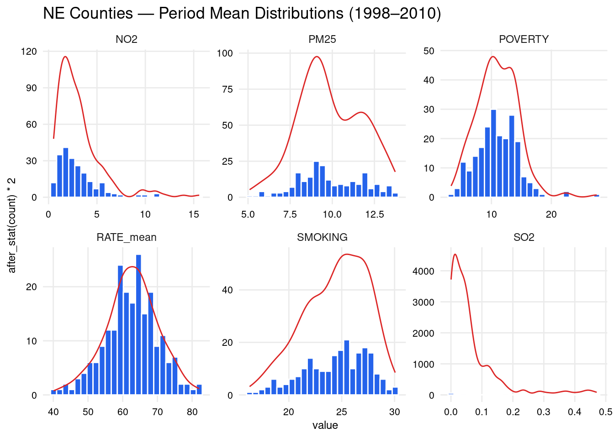
ggsave(file.path(OUT_DIR, "eda_histograms.png"), p_hist, width = 14, height = 8, dpi = 150)corr <- st_drop_geometry(gdf) %>% select(RATE_mean, all_of(COVARIATES)) %>% cor(use = "complete.obs")
corr_df <- as.data.frame(corr) %>%
rownames_to_column("var1") %>%
pivot_longer(-var1, names_to = "var2", values_to = "r")
p_corr <- ggplot(corr_df, aes(var1, var2, fill = r)) +
geom_tile(colour = "white") +
geom_text(aes(label = sprintf("%.2f", r)), size = 3) +
scale_fill_distiller(palette = "RdBu", direction = 1, limits = c(-1, 1)) +
labs(title = "Pearson Correlation — Period Means") +
theme(axis.text = element_text(size = 8), axis.title = element_blank(),
axis.text.x = element_text(angle = 45, hjust = 1))
print(p_corr)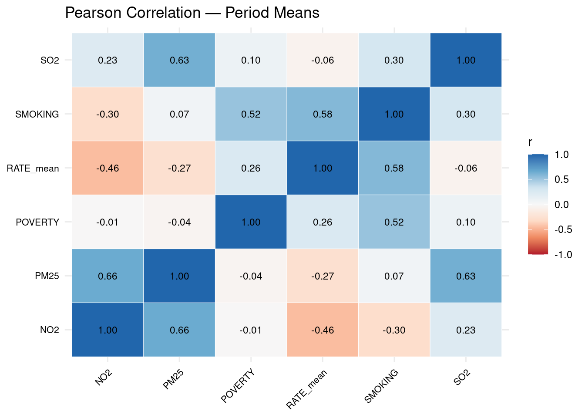
ggsave(file.path(OUT_DIR, "eda_correlation.png"), p_corr, width = 7, height = 6, dpi = 150)ne_fips <- unique(gdf$FIPS_int)
ne_yearly <- yearly %>% filter(FIPS %in% ne_fips)
trend <- ne_yearly %>%
group_by(Year) %>%
summarise(mean = mean(RATE, na.rm = TRUE),
sd = sd(RATE, na.rm = TRUE),
count = n(), .groups = "drop")
p_tr <- ggplot(trend, aes(Year, mean)) +
geom_ribbon(aes(ymin = mean - sd, ymax = mean + sd), fill = "#A23B72", alpha = 0.2) +
geom_line(colour = "#A23B72", linewidth = 1) +
geom_point(colour = "#A23B72", size = 2) +
labs(
x = "Year", y = "LBC mortality rate (per 100k)",
title = "NE Region — Mean LBC Rate Over Time (±1 SD across counties)"
) +
theme(axis.text = element_text(size = 9), axis.title = element_text(size = 10))
print(p_tr)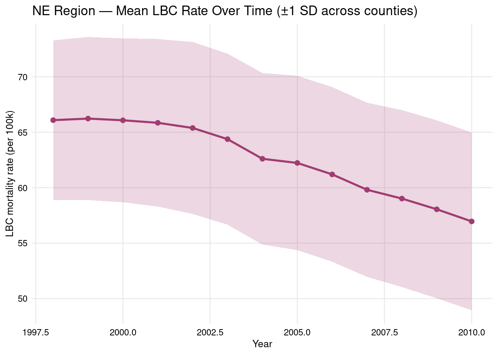
ggsave(file.path(OUT_DIR, "eda_temporal_trend.png"), p_tr, width = 8, height = 4, dpi = 150)
print(trend %>% mutate(across(where(is.numeric), ~ round(.x, 2))))# A tibble: 13 × 4
Year mean sd count
<dbl> <dbl> <dbl> <dbl>
1 1998 66.1 7.2 217
2 1999 66.2 7.35 217
3 2000 66.1 7.39 217
4 2001 65.8 7.55 217
5 2002 65.4 7.75 217
6 2003 64.4 7.71 217
7 2004 62.6 7.74 217
8 2005 62.2 7.86 217
9 2006 61.2 7.87 217
10 2007 59.8 7.85 217
11 2008 59.0 7.98 217
12 2009 58.0 8.03 217
13 2010 57.0 8.01 2173. Choropleth Maps — Yearly & Period Mean LBC Rates
Maps use the US county polygon layer (US_COUNTY.shp) for the Northeast region.
choropleth <- function(gdf_in, column, title, pal = "YlOrRd",
vmin = NULL, vmax = NULL) {
ggplot(gdf_in) +
geom_sf(aes(fill = .data[[column]]), colour = "grey70", linewidth = 0.15) +
scale_fill_distiller(
name = "Rate per 100k", palette = pal, direction = 1,
limits = if (!is.null(vmin)) c(vmin, vmax) else NULL,
na.value = "grey90"
) +
labs(title = title) +
coord_sf()
}
p_mean <- choropleth(gdf, "RATE_mean", "NE Counties Mean LBC Mortality (1998–2010)")
print(p_mean)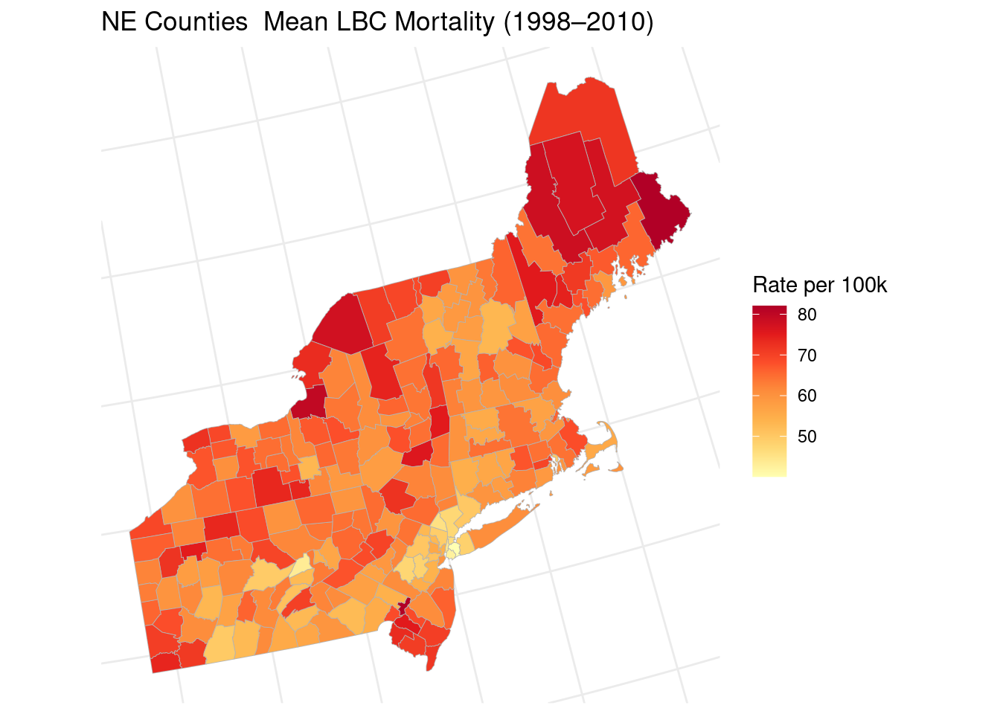
ggsave(file.path(OUT_DIR, "map_rate_mean.png"), p_mean, width = 9, height = 8, dpi = 150)sample_years <- c(1998, 2002, 2006, 2010)
ne_yearly_gdf <- counties %>%
filter(REGION == "Northeast") %>%
mutate(FIPS_int = as.integer(FIPS)) %>%
st_transform(5070)
vmin <- min(ne_yearly$RATE, na.rm = TRUE)
vmax <- max(ne_yearly$RATE, na.rm = TRUE)
yr_maps <- lapply(sample_years, function(yr) {
yr_df <- ne_yearly %>% filter(Year == yr)
yr_gdf <- ne_yearly_gdf %>% left_join(yr_df, by = c("FIPS_int" = "FIPS"))
choropleth(yr_gdf, "RATE", sprintf("LBC Rate — %d", yr), vmin = vmin, vmax = vmax)
})
p_yrs <- wrap_plots(yr_maps, ncol = 2) +
plot_annotation(title = "Yearly LBC Mortality Rate — Northeast Counties")
print(p_yrs)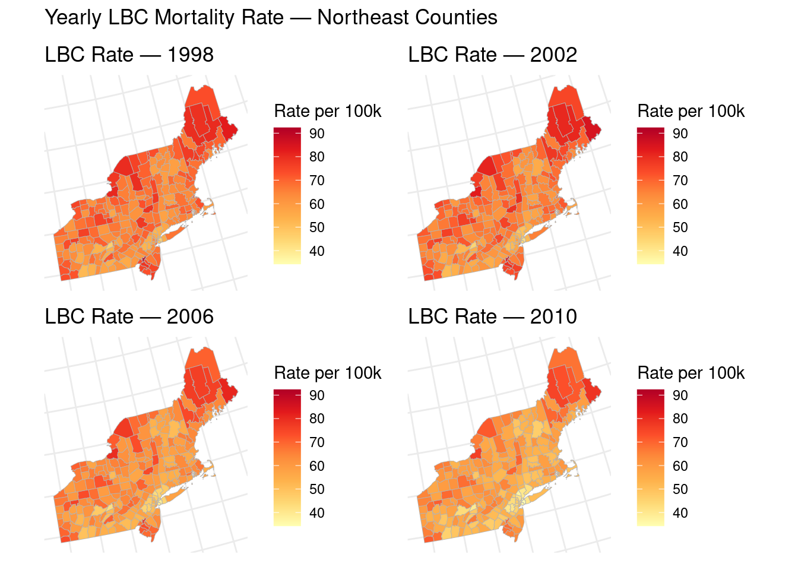
ggsave(file.path(OUT_DIR, "maps_yearly_rate.png"), p_yrs, width = 14, height = 12, dpi = 150)4. Spatial Weights & Hot Spot Analysis (Getis-Ord Gi*)
Queen contiguity weights encode shared-boundary neighbours. The Getis-Ord Gi* statistic compares each county’s rate to the mean rate within its local neighbourhood, identifying statistically significant hot spots (high-high) and cold spots (low-low).
The Getis-Ord Gi* statistic for location i is calculated as:
\[ G_i^* = \frac{\sum_j w_{i,j} x_j - \bar{X} \sum_j w_{i,j}}{S \sqrt{\frac{n \sum_j w_{i,j}^2 - \left(\sum_j w_{i,j}\right)^2}{n - 1}}} \]
where
- xj: the attribute value at location j
- wi,j: the spatial weight between locations i and j
- X̄: the mean of all xj
- S: the standard deviation of all xj
- n: the total number of locations.
Nantucket County (MA) is an spatial island (no queen neighbours) and is excluded from inference requiring a full weights matrix.
nb_q <- poly2nb(gdf, queen = TRUE)Warning in poly2nb(gdf, queen = TRUE): some observations have no neighbours;
if this seems unexpected, try increasing the snap argument.Warning in poly2nb(gdf, queen = TRUE): neighbour object has 2 sub-graphs;
if this sub-graph count seems unexpected, try increasing the snap argument.islands <- which(card(nb_q) == 0)
if (length(islands)) {
island_names <- st_drop_geometry(gdf)[islands, c("STATE", "COUNTY")]
cat(sprintf("Removing %d island(s):\n", length(islands)))
print(island_names)
gdf_sp <- gdf[-islands, ]
coords_sp <- coords[-islands, , drop = FALSE]
nb_q <- poly2nb(gdf_sp, queen = TRUE)
} else {
gdf_sp <- gdf
coords_sp <- coords
}Removing 1 island(s):
STATE COUNTY
74 Massachusetts Nantucket Countylw <- nb2listw(nb_q, style = "W", zero.policy = TRUE)
cat(sprintf("Spatial analysis sample: N=%d counties\n", length(nb_q)))Spatial analysis sample: N=216 countiescat(sprintf("Average neighbours: %.1f\n", mean(card(nb_q))))Average neighbours: 5.2y_rate <- gdf_sp$RATE_mean
lw_gstar <- nb2listw(include.self(nb_q), style = "B", zero.policy = TRUE)
gi <- localG(y_rate, lw_gstar, zero.policy = TRUE)
gdf_sp$Gi_Z <- as.numeric(gi)
gdf_sp$Gi_p <- 2 * pnorm(-abs(gdf_sp$Gi_Z))
gdf_sp$hotspot <- case_when(
gdf_sp$Gi_Z > 1.96 & gdf_sp$Gi_p <= 0.05 ~ "Hot spot",
gdf_sp$Gi_Z < -1.96 & gdf_sp$Gi_p <= 0.05 ~ "Cold spot",
TRUE ~ "Not significant"
)
hs_colors <- c("Hot spot" = "#d73027", "Cold spot" = "#4575b4",
"Not significant" = "#ffffbf")
p_hs <- ggplot(gdf_sp) +
geom_sf(aes(fill = hotspot), colour = "grey50", linewidth = 0.2) +
scale_fill_manual(values = hs_colors) +
labs(title = "Getis-Ord Gi* Hot/Cold Spots — Mean LBC Rate (p ≤ 0.05)", fill = NULL)
print(p_hs)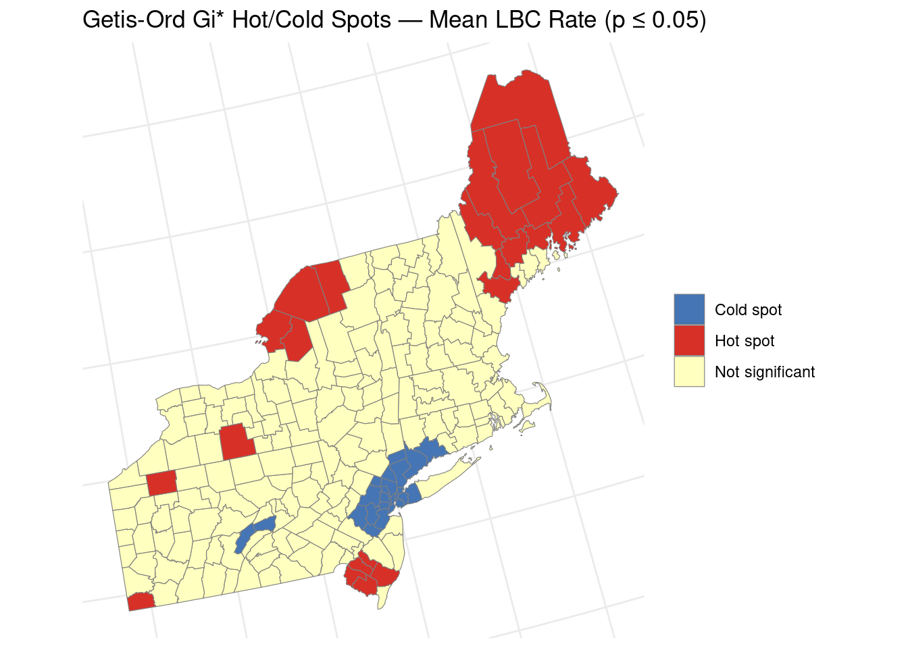
ggsave(file.path(OUT_DIR, "map_gi_star.png"), p_hs, width = 9, height = 8, dpi = 150)
print(table(gdf_sp$hotspot))
Cold spot Hot spot Not significant
23 23 170 5. Bivariate Local Moran’s I
The Bivariate Local Moran’s I (\(I_i^{XY}\)) is a spatial statistic that quantifies the association between the value of variable \(X\) at location \(i\) and the spatial lag (weighted average in neighbors) of variable \(Y\) around \(i\).
Mathematically, for each location \(i\):
\[ I_i^{XY} = z_{X,i} \sum_j w_{ij} z_{Y,j} \]
where: - \(z_{X,i} = X_i - \bar{X}\) is the deviation of variable \(X\) at location \(i\) from its mean. - \(z_{Y,j} = Y_j - \bar{Y}\) is the deviation of variable \(Y\) at neighboring location \(j\) from its mean. - \(w_{ij}\) is the spatial weight between locations \(i\) and \(j\) (e.g., 1 if neighbors, 0 otherwise).
This statistic tests whether, for example, a high value of LBC mortality rate in county \(i\) (\(X_i\)) is associated with high or low values of poverty in adjacent counties (\(Y_j\)). Significance is assessed by permutation.
Outcomes highlight clusters where areas with high LBC mortality are surrounded by high poverty (“high-high”), or low-low, as well as discordant patterns (“high-low”, “low-high”). Statistically significant \(I_i^{XY}\) indicates localized spatial relationships between two variables, aiding detection of meaningful spatial patterns.
Bivariate LISA tests whether high LBC mortality in county i is associated with high poverty in neighbouring counties (and analogous low-low / discordant patterns).
zx <- as.numeric(scale(gdf_sp$RATE_mean))
zy <- as.numeric(scale(gdf_sp$POVERTY))
lag_zy <- lag.listw(lw, zy, zero.policy = TRUE)
Ii_xy <- zx * lag_zy
# Conditional permutation p-values
n_perm <- 999
n_sp <- nrow(gdf_sp)
I_perm <- replicate(n_perm, {
zy_p <- sample(zy)
zx * lag.listw(lw, zy_p, zero.policy = TRUE)
})
p_sim <- rowMeans(abs(I_perm) >= abs(Ii_xy))
quadrant <- rep("NS", n_sp)
q <- case_when(
zx > 0 & lag_zy > 0 ~ "HH",
zx < 0 & lag_zy > 0 ~ "LH",
zx < 0 & lag_zy < 0 ~ "LL",
TRUE ~ "HL"
)
quadrant[p_sim < 0.05] <- q[p_sim < 0.05]
gdf_sp$bivar_cluster <- quadrant
bv_colors <- c(HH = "#d73027", LL = "#4575b4", HL = "#fdae61",
LH = "#abd9e9", NS = "#ffffbf")
p_bv <- ggplot(gdf_sp) +
geom_sf(aes(fill = bivar_cluster), colour = "grey50", linewidth = 0.2) +
scale_fill_manual(values = bv_colors) +
labs(title = "Bivariate LISA: LBC Rate (i) × Poverty (neighbours)", fill = NULL)
print(p_bv)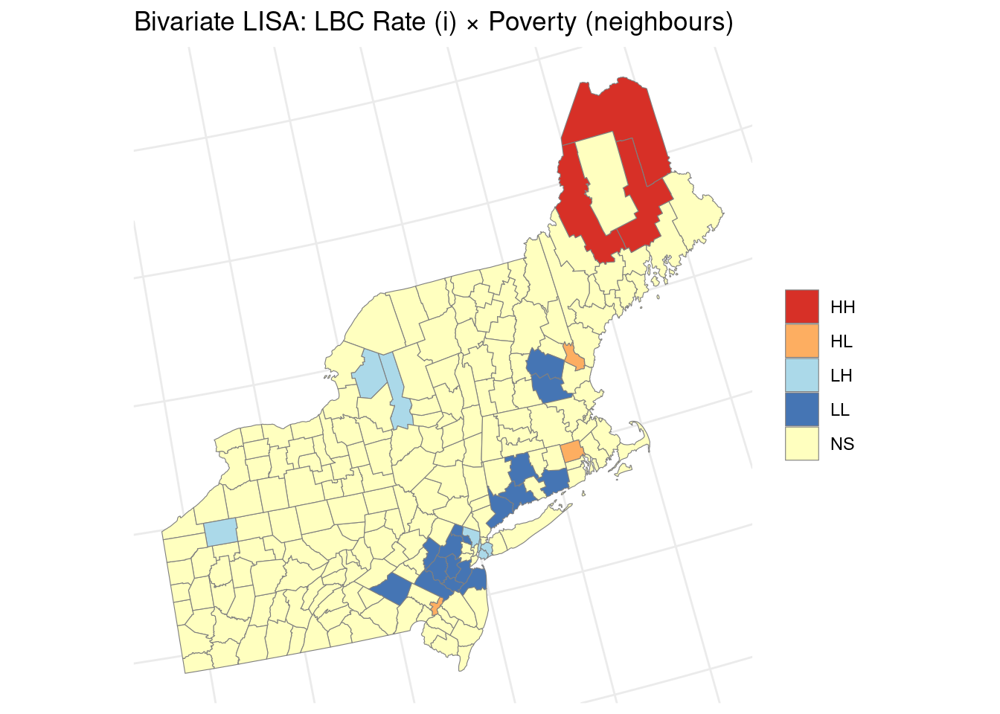
ggsave(file.path(OUT_DIR, "map_bivar_moran.png"), p_bv, width = 9, height = 8, dpi = 150)
print(table(quadrant))quadrant
HH HL LH LL NS
3 3 7 16 187 6. Spatially Lagged Regressors
Spatially lagged regressors capture the influence of covariates (independent variables) in neighboring spatial units on the outcome at each location. Mathematically, for a covariate vector \(X\) (e.g., poverty), the spatially lagged covariate is computed as \(WX\), where \(W\) is the spatial weights matrix (defining neighbor relations), and:
\[ (WX)_i = \sum_{j} w_{ij} X_j \]
Here, \((WX)_i\) is the average (or weighted sum) of covariate \(X\) in the neighbors \(j\) of region \(i\). In the SLX (Spatial Lag of X) model, both the original covariate and its spatial lag are included as regressors:
\[ Y = X\beta + WX\theta + \varepsilon \]
where: - \(Y\): outcome variable (e.g., LBC mortality rate) - \(X\): matrix of local covariate values, - \(WX\): matrix of spatially lagged covariate values, - \(\beta\): coefficients for local effects, - \(\theta\): coefficients for neighboring effects, - \(\varepsilon\): error term.
This formulation allows us to distinguish between effects due to an area’s own characteristics (\(\beta\)) and effects from neighboring characteristics (\(\theta\)).
Comparisons with other spatial econometric models: - SAR (Spatial Lag of Y / SLM): Models spatial dependence in the outcome itself: \[ Y = \rho W Y + X\beta + \varepsilon \] where \(\rho\) measures spatial spillover of the outcome. - SEM (Spatial Error Model): Models spatial correlation in the errors: \[ Y = X\beta + u, \quad u = \lambda W u + \varepsilon \] where \(\lambda\) represents spatial dependence in the unobserved factors.
By comparing SLX, SAR, and SEM models, we can assess whether spatial processes arise from neighbors’ covariates, spillovers in the outcome, or unmeasured spatially correlated shocks.
| Model | Specification | Interpretation |
|---|---|---|
| SLX (lagged exogenous) | Y = Xβ + WXθ + ε |
Neighbours’ covariates affect local outcome |
| SAR / SLM (lagged endogenous) | Y = ρWY + Xβ + ε |
Outcome spillovers across neighbours |
| SEM | Y = Xβ + u, u = λWu + ε |
Unobserved spatially correlated shocks |
We compare OLS, SLX, spatial lag (SAR), and spatial error (SEM) using spatialreg.
dat <- st_drop_geometry(gdf_sp)
ols <- lm(RATE_mean ~ SMOKING + POVERTY + PM25 + NO2 + SO2, data = dat)
cat("OLS summary (coefficients):\n")OLS summary (coefficients):print(tidy(ols))# A tibble: 6 × 5
term estimate std.error statistic p.value
<chr> <dbl> <dbl> <dbl> <dbl>
1 (Intercept) 33.6 4.44 7.56 1.22e-12
2 SMOKING 1.52 0.183 8.34 9.93e-15
3 POVERTY -0.108 0.140 -0.775 4.39e- 1
4 PM25 -0.461 0.379 -1.22 2.25e- 1
5 NO2 -0.559 0.262 -2.13 3.43e- 2
6 SO2 -10.7 6.15 -1.74 8.34e- 2# Spatially lagged exogenous regressors (SLX)
for (v in COVARIATES) {
dat[[paste0("W_", v)]] <- lag.listw(lw, dat[[v]], zero.policy = TRUE)
}
slx <- lm(
RATE_mean ~ SMOKING + POVERTY + PM25 + NO2 + SO2 +
W_SMOKING + W_POVERTY + W_PM25 + W_NO2 + W_SO2,
data = dat
)
cat("\nSLX (spatially lagged X) — selected coefficients:\n")
SLX (spatially lagged X) — selected coefficients:print(tidy(slx) %>% mutate(across(where(is.numeric), ~ round(.x, 3))))# A tibble: 11 × 5
term estimate std.error statistic p.value
<chr> <dbl> <dbl> <dbl> <dbl>
1 (Intercept) 31.7 6.42 4.94 0
2 SMOKING 1.54 0.203 7.62 0
3 POVERTY -0.033 0.16 -0.204 0.839
4 PM25 1.71 1.55 1.10 0.272
5 NO2 -0.276 0.518 -0.533 0.595
6 SO2 30.3 33.8 0.898 0.37
7 W_SMOKING 0.309 0.357 0.866 0.388
8 W_POVERTY -0.424 0.281 -1.51 0.133
9 W_PM25 -2.44 1.69 -1.44 0.15
10 W_NO2 -0.142 0.56 -0.253 0.801
11 W_SO2 -43.8 36.9 -1.19 0.237sar <- lagsarlm(RATE_mean ~ SMOKING + POVERTY + PM25 + NO2 + SO2,
data = dat, listw = lw, zero.policy = TRUE)
cat(sprintf("\nSAR (spatial lag of Y): rho = %.4f\n", sar$rho))
SAR (spatial lag of Y): rho = 0.4821print(summary(sar, Nagelkerke = TRUE))
Call:lagsarlm(formula = RATE_mean ~ SMOKING + POVERTY + PM25 + NO2 +
SO2, data = dat, listw = lw, zero.policy = TRUE)
Residuals:
Min 1Q Median 3Q Max
-17.772816 -3.350468 0.039351 3.054682 13.373015
Type: lag
Coefficients: (asymptotic standard errors)
Estimate Std. Error z value Pr(>|z|)
(Intercept) 6.076572 5.012385 1.2123 0.2254
SMOKING 1.295528 0.164591 7.8712 3.553e-15
POVERTY -0.100703 0.121229 -0.8307 0.4062
PM25 -0.348323 0.327903 -1.0623 0.2881
NO2 -0.015218 0.237508 -0.0641 0.9489
SO2 -10.850548 5.328126 -2.0365 0.0417
Rho: 0.48206, LR test value: 44.86, p-value: 2.1159e-11
Asymptotic standard error: 0.066378
z-value: 7.2623, p-value: 3.8058e-13
Wald statistic: 52.741, p-value: 3.8058e-13
Log likelihood: -656.7071 for lag model
ML residual variance (sigma squared): 24.254, (sigma: 4.9248)
Nagelkerke pseudo-R-squared: 0.55874
Number of observations: 216
Number of parameters estimated: 8
AIC: 1329.4, (AIC for lm: 1372.3)
LM test for residual autocorrelation
test value: 8.2502, p-value: 0.0040747sem <- errorsarlm(RATE_mean ~ SMOKING + POVERTY + PM25 + NO2 + SO2,
data = dat, listw = lw, zero.policy = TRUE)
cat(sprintf("SEM: lambda = %.4f\n", sem$lambda))SEM: lambda = 0.6227print(summary(sem, Nagelkerke = TRUE))
Call:errorsarlm(formula = RATE_mean ~ SMOKING + POVERTY + PM25 + NO2 +
SO2, data = dat, listw = lw, zero.policy = TRUE)
Residuals:
Min 1Q Median 3Q Max
-16.93522 -3.22538 0.11497 3.01098 11.02081
Type: error
Coefficients: (asymptotic standard errors)
Estimate Std. Error z value Pr(>|z|)
(Intercept) 30.69986430 5.97034200 5.1421 2.717e-07
SMOKING 1.49731669 0.16341449 9.1627 < 2.2e-16
POVERTY 0.00020002 0.12617915 0.0016 0.9987
PM25 -0.25392566 0.58590075 -0.4334 0.6647
NO2 -0.50668331 0.34337949 -1.4756 0.1401
SO2 -9.72798554 10.59714292 -0.9180 0.3586
Lambda: 0.62268, LR test value: 60.442, p-value: 7.5495e-15
Asymptotic standard error: 0.064684
z-value: 9.6264, p-value: < 2.22e-16
Wald statistic: 92.668, p-value: < 2.22e-16
Log likelihood: -648.9165 for error model
ML residual variance (sigma squared): 21.597, (sigma: 4.6473)
Nagelkerke pseudo-R-squared: 0.58945
Number of observations: 216
Number of parameters estimated: 8
AIC: 1313.8, (AIC for lm: 1372.3)cmp <- tibble(
model = c("OLS", "SLX", "SAR", "SEM"),
AIC = c(AIC(ols), AIC(slx), AIC(sar), AIC(sem)),
LogLik = c(as.numeric(logLik(ols)), as.numeric(logLik(slx)), sar$LL, sem$LL)
) %>% arrange(AIC)
cat("\nModel comparison (lower AIC preferred):\n")
Model comparison (lower AIC preferred):print(cmp %>% mutate(across(where(is.numeric), ~ round(.x, 2))))# A tibble: 4 × 3
model AIC LogLik
<chr> <dbl> <dbl>
1 SEM 1314. -649.
2 SAR 1329. -657.
3 OLS 1372. -679.
4 SLX 1373. -675.7. Geographically Weighted Correlation (GWCORR)
At each county i, we compute a local Pearson correlation between LBC rate and poverty that is geographically weighted.
Specifically, for each location i, we compute the local (weighted) Pearson correlation coefficient \(r_i\) as follows:
Let \(y_1\) be the vector of LBC rates, \(y_2\) be the vector of poverty rates, each of length \(n\).
For location \(i\), assign a Gaussian weight:
\[ w_{ij} = \exp\left(-\frac{d_{ij}^2}{2 h^2}\right) \]
where \(d_{ij}\) is the distance between locations \(i\) and \(j\), and \(h\) is the bandwidth (chosen as in GWR).
Then, the weighted means:
\[ \mu_{1,i} = \sum_j w_{ij} y_{1j} \]
\[ \mu_{2,i} = \sum_j w_{ij} y_{2j} \]
The weighted covariance at \(i\):
\[ \mathrm{Cov}_i(y_1, y_2) = \sum_j w_{ij} (y_{1j} - \mu_{1,i})(y_{2j} - \mu_{2,i}) \]
The weighted standard deviations at \(i\):
\[ \sigma_{1,i} = \sqrt{\sum_j w_{ij} (y_{1j} - \mu_{1,i})^2} \]
\[ \sigma_{2,i} = \sqrt{\sum_j w_{ij} (y_{2j} - \mu_{2,i})^2} \]
The local weighted Pearson correlation at \(i\) is:
\[ r_i = \frac{\mathrm{Cov}_i(y_1, y_2)}{\sigma_{1,i} \, \sigma_{2,i}} \]
This gives a spatial map of local (smoothed) correlations between LBC rate and poverty.
gw_corr <- function(y1, y2, coords, bandwidth = NULL) {
n <- length(y1)
d <- as.matrix(dist(coords))
if (is.null(bandwidth)) bandwidth <- as.numeric(quantile(d[d > 0], 0.30))
local_r <- numeric(n)
for (i in seq_len(n)) {
w_i <- exp(-d[i, ]^2 / (2 * bandwidth^2))
w_i <- w_i / sum(w_i)
mu1 <- sum(w_i * y1); mu2 <- sum(w_i * y2)
num <- sum(w_i * (y1 - mu1) * (y2 - mu2))
den <- sqrt(sum(w_i * (y1 - mu1)^2) * sum(w_i * (y2 - mu2)^2))
local_r[i] <- if (den > 0) num / den else NA_real_
}
list(r = local_r, bandwidth = bandwidth)
}
gw <- gw_corr(gdf_sp$RATE_mean, gdf_sp$POVERTY, coords_sp)
gdf_sp$gw_corr_rate_poverty <- gw$r
cat(sprintf("GWCORR bandwidth: %.0f m | mean r = %.3f\n", gw$bandwidth, mean(gw$r, na.rm = TRUE)))GWCORR bandwidth: 234251 m | mean r = 0.220p_gwc <- ggplot(gdf_sp) +
geom_sf(aes(fill = gw_corr_rate_poverty), colour = "grey50", linewidth = 0.2) +
scale_fill_distiller(name = "Local r", palette = "RdBu", direction = 1,
limits = c(-1, 1)) +
labs(title = "GWCORR: LBC Rate vs Poverty (local Pearson r)")
print(p_gwc)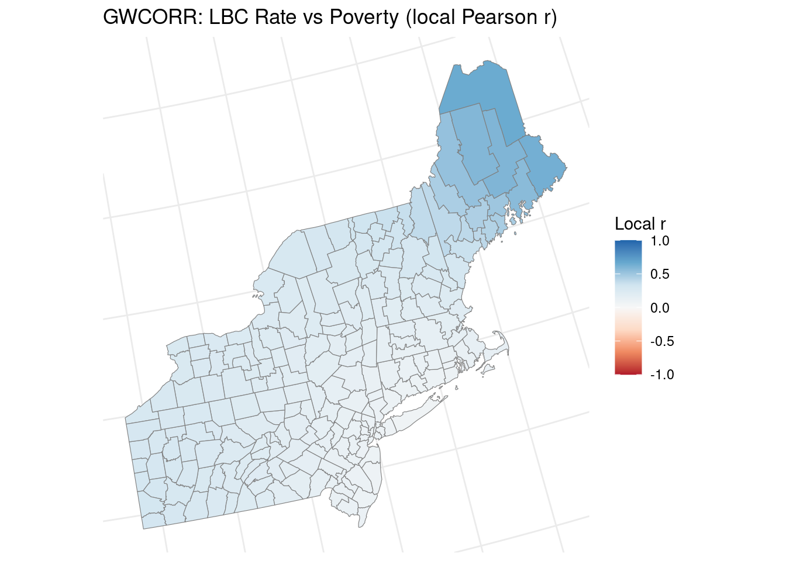
ggsave(file.path(OUT_DIR, "map_gwcorr.png"), p_gwc, width = 9, height = 8, dpi = 150)8. Geographically Weighted OLS (GW-OLS)
Geographically Weighted OLS (GW-OLS) extends traditional linear regression by estimating location-specific regression coefficients \(\boldsymbol{\beta}(u, v)\) at spatial coordinates \((u,v)\). The GW-OLS model at each location \(i\) is:
\[ y_i = \beta_0(u_i, v_i) + \sum_{j=1}^p \beta_j(u_i, v_i) X_{ij} + \varepsilon_i \]
where: - \(y_i\) is the response (e.g., LBC rate at location \(i\)) - \(X_{ij}\) is the value of predictor \(j\) at location \(i\) (e.g., smoking, poverty, PM2.5) - \(\beta_j(u_i,v_i)\) is the spatially varying coefficient for each covariate at location \(i\) - \(\varepsilon_i\) is the error term
At each location, coefficients are estimated by minimizing the locally weighted least squares:
\[ \min_{\boldsymbol{\beta}} \sum_{k=1}^{n} w_{ik} (y_k - \beta_0 - \sum_{j=1}^p \beta_j X_{kj})^2 \]
Here, \(w_{ik}\) is a spatial weight (usually Gaussian) measuring the proximity of location \(k\) to \(i\). The bandwidth parameter (selected via AICc) controls the degree of locality.
We use the GWmodel package to fit GW-OLS, select optimal bandwidth, and map the local effects of key predictors (smoking, poverty, PM2.5).
spdf <- st_drop_geometry(gdf_sp)
spdf$x <- coords_sp[, 1]
spdf$y <- coords_sp[, 2]
coordinates(spdf) <- ~ x + y
proj4string(spdf) <- CRS(st_crs(gdf_sp)$proj4string)
bw_gwr <- tryCatch(
bw.gwr(RATE_mean ~ SMOKING + POVERTY + PM25 + NO2 + SO2,
data = spdf, kernel = "gaussian", adaptive = FALSE),
error = function(e) as.numeric(quantile(as.matrix(dist(coords_sp))[as.matrix(dist(coords_sp)) > 0], 0.3))
)Fixed bandwidth: 745761.4 CV score: 7191.491
Fixed bandwidth: 460998.1 CV score: 6956.253
Fixed bandwidth: 285004.7 CV score: 6549.912
Fixed bandwidth: 176234.7 CV score: 5976.711
Fixed bandwidth: 109011.2 CV score: 5625.263
Fixed bandwidth: 67464.81 CV score: 6871.001
Fixed bandwidth: 134688.3 CV score: 5708.35
Fixed bandwidth: 93141.91 CV score: 5607.266
Fixed bandwidth: 83334.13 CV score: 5672.985
Fixed bandwidth: 99203.45 CV score: 5610.863
Fixed bandwidth: 89395.67 CV score: 5614.229
Fixed bandwidth: 95457.21 CV score: 5607.418
Fixed bandwidth: 91710.97 CV score: 5608.558
Fixed bandwidth: 94026.27 CV score: 5607.056
Fixed bandwidth: 94572.84 CV score: 5607.104
Fixed bandwidth: 93688.48 CV score: 5607.091
Fixed bandwidth: 94235.05 CV score: 5607.059
Fixed bandwidth: 93897.25 CV score: 5607.063
Fixed bandwidth: 94106.02 CV score: 5607.055
Fixed bandwidth: 94155.3 CV score: 5607.056
Fixed bandwidth: 94075.56 CV score: 5607.055 gwr_model <- gwr.basic(
RATE_mean ~ SMOKING + POVERTY + PM25 + NO2 + SO2,
data = spdf, bw = bw_gwr, kernel = "gaussian", adaptive = FALSE
)
cat(sprintf("GW-OLS bandwidth (AICc): %.0f m\n", bw_gwr))GW-OLS bandwidth (AICc): 94076 mprint(gwr_model) ***********************************************************************
* Package GWmodel *
***********************************************************************
Program starts at: 2026-08-23 23:52:58.73262
Call:
gwr.basic(formula = RATE_mean ~ SMOKING + POVERTY + PM25 + NO2 +
SO2, data = spdf, bw = bw_gwr, kernel = "gaussian", adaptive = FALSE)
Dependent (y) variable: RATE_mean
Independent variables: SMOKING POVERTY PM25 NO2 SO2
Number of data points: 216
***********************************************************************
* Results of Global Regression *
***********************************************************************
Call:
lm(formula = formula, data = data)
Residuals:
Min 1Q Median 3Q Max
-19.151 -3.962 -0.161 3.930 15.877
Coefficients:
Estimate Std. Error t value Pr(>|t|)
(Intercept) 33.5611 4.4384 7.562 1.22e-12 ***
SMOKING 1.5240 0.1828 8.338 9.93e-15 ***
POVERTY -0.1084 0.1400 -0.775 0.4394
PM25 -0.4613 0.3791 -1.217 0.2250
NO2 -0.5586 0.2621 -2.131 0.0343 *
SO2 -10.7069 6.1548 -1.740 0.0834 .
---Significance stars
Signif. codes: 0 '***' 0.001 '**' 0.01 '*' 0.05 '.' 0.1 ' ' 1
Residual standard error: 5.693 on 210 degrees of freedom
Multiple R-squared: 0.4569
Adjusted R-squared: 0.444
F-statistic: 35.33 on 5 and 210 DF, p-value: < 2.2e-16
***Extra Diagnostic information
Residual sum of squares: 6807.019
Sigma(hat): 5.639903
AIC: 1372.275
AICc: 1372.813
BIC: 1217.528
***********************************************************************
* Results of Geographically Weighted Regression *
***********************************************************************
*********************Model calibration information*********************
Kernel function: gaussian
Fixed bandwidth: 94075.56
Regression points: the same locations as observations are used.
Distance metric: Euclidean distance metric is used.
****************Summary of GWR coefficient estimates:******************
Min. 1st Qu. Median 3rd Qu. Max.
Intercept -58.621853 2.004108 22.403086 34.950550 60.6361
SMOKING 0.736893 1.357500 1.646822 2.015787 2.9207
POVERTY -0.730087 -0.422420 -0.058076 0.281581 0.7214
PM25 -6.415072 -0.915030 0.682040 1.843009 7.0514
NO2 -9.310784 -0.865419 -0.372732 1.240877 17.7385
SO2 -372.958796 -101.893029 -59.801545 -13.273433 300.2038
************************Diagnostic information*************************
Number of data points: 216
Effective number of parameters (2trace(S) - trace(S'S)): 52.5422
Effective degrees of freedom (n-2trace(S) + trace(S'S)): 163.4578
AICc (GWR book, Fotheringham, et al. 2002, p. 61, eq 2.33): 1321.993
AIC (GWR book, Fotheringham, et al. 2002,GWR p. 96, eq. 4.22): 1260.382
BIC (GWR book, Fotheringham, et al. 2002,GWR p. 61, eq. 2.34): 1219.008
Residual sum of squares: 3596.54
R-square value: 0.7130398
Adjusted R-square value: 0.620231
***********************************************************************
Program stops at: 2026-08-23 23:52:58.752113 local_b <- as.data.frame(gwr_model$SDF)
gdf_sp$gw_beta_Intercept <- local_b$Intercept
for (v in COVARIATES) gdf_sp[[paste0("gw_beta_", v)]] <- local_b[[v]]map_vars <- c("POVERTY", "SMOKING", "PM25")
p_gwr <- wrap_plots(lapply(map_vars, function(var) {
ggplot(gdf_sp) +
geom_sf(aes(fill = .data[[paste0("gw_beta_", var)]]), colour = "grey50", linewidth = 0.2) +
scale_fill_distiller(palette = "RdBu", direction = 1) +
labs(title = paste("GW-OLS β —", var), fill = NULL)
}), ncol = 3) +
plot_annotation(title = "Spatially Varying Coefficients (GW-OLS)")
print(p_gwr)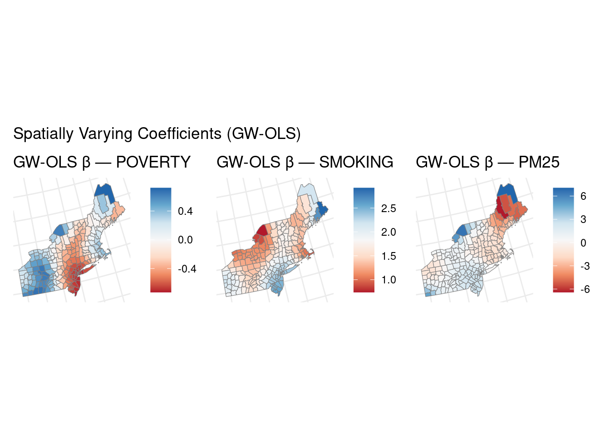
ggsave(file.path(OUT_DIR, "map_gwr_coefficients.png"), p_gwr, width = 16, height = 5, dpi = 150)9. Geographically Weighted Random Forest (GW-RF)
Geographically Weighted Random Forest (GW-RF) adapts the standard Random Forest (RF) regression to account for spatial heterogeneity by fitting a locally weighted RF model at each location.
For each county/location \(i\), we assign a spatial weight to each sample \(k\) using a Gaussian kernel: \[ w_{ik} = \exp\left(- \frac{d_{ik}^2}{2b^2}\right) \] where \(d_{ik}\) is the distance between locations \(i\) and \(k\), and \(b\) is the bandwidth parameter controlling the degree of locality.
For location \(i\), the locally weighted RF is trained by maximizing the weighted likelihood: \[ \text{Train RF}_i: \ \{ (X_k, y_k), w_{ik} \}_{k=1}^n \] that is, for each tree split and for the tree ensemble, each sample \((X_k, y_k)\) is included with weight \(w_{ik}\).
After fitting RF\(_i\), we extract the local variable importance scores: \[ \text{Importance}_i(j) = \text{RF}_i \text{ feature importance for variable } j \] which quantifies, for each location \(i\), the contribution of predictor \(j\) to explaining local variation.
For comparison, a global RF on the full dataset (all weights equal) provides a benchmark feature importance: \[ \text{Importance}_{\text{global}}(j) = \text{RF}_{\text{global}} \text{ feature importance for variable } j \]
gw_random_forest <- function(X, y, coords, bandwidth = NULL, n_estimators = 200, seed = 42) {
n <- nrow(X); p <- ncol(X)
d <- as.matrix(dist(coords))
if (is.null(bandwidth)) bandwidth <- as.numeric(quantile(d[d > 0], 0.30))
local_imp <- matrix(0, n, p)
local_pred <- numeric(n)
colnames(X) <- colnames(X)
df_rf <- as.data.frame(X)
df_rf$y <- y
for (i in seq_len(n)) {
w_i <- exp(-d[i, ]^2 / (2 * bandwidth^2))
w_i <- w_i / max(w_i)
rf <- ranger(
y ~ ., data = df_rf, num.trees = n_estimators, seed = seed,
importance = "impurity", case.weights = w_i,
min.node.size = max(3, floor(n / 20))
)
local_imp[i, ] <- rf$variable.importance[colnames(X)]
local_pred[i] <- predict(rf, data = df_rf[i, , drop = FALSE])$predictions
}
list(imp = local_imp, pred = local_pred, bandwidth = bandwidth)
}
X_rf <- as.matrix(st_drop_geometry(gdf_sp)[, COVARIATES])
y_rf <- gdf_sp$RATE_mean
rf_global <- ranger(
RATE_mean ~ SMOKING + POVERTY + PM25 + NO2 + SO2,
data = st_drop_geometry(gdf_sp), num.trees = 300, seed = 42,
importance = "impurity"
)
global_imp <- sort(rf_global$variable.importance, decreasing = TRUE)
cat("Global RF feature importance:\n")Global RF feature importance:print(round(global_imp, 3)) SMOKING NO2 PM25 POVERTY SO2
4187.473 2275.689 1960.274 1804.148 1718.838 gwrf <- gw_random_forest(X_rf, y_rf, coords_sp, n_estimators = 150)
cat(sprintf("\nGW-RF bandwidth: %.0f m | mean local R² proxy: %.3f\n",
gwrf$bandwidth,
1 - mean((y_rf - gwrf$pred)^2) / var(y_rf)))
GW-RF bandwidth: 234251 m | mean local R² proxy: 0.969for (j in seq_along(COVARIATES)) {
gdf_sp[[paste0("gwrf_imp_", COVARIATES[j])]] <- gwrf$imp[, j]
}imp_df <- tibble(variable = names(global_imp), importance = as.numeric(global_imp))
p_imp <- ggplot(imp_df, aes(reorder(variable, importance), importance)) +
geom_col(fill = "#F18F01", colour = "white") +
coord_flip() +
labs(x = NULL, y = "Mean decrease impurity",
title = "Global Random Forest — Feature Importance") +
theme(axis.text = element_text(size = 9), axis.title = element_text(size = 10))
print(p_imp)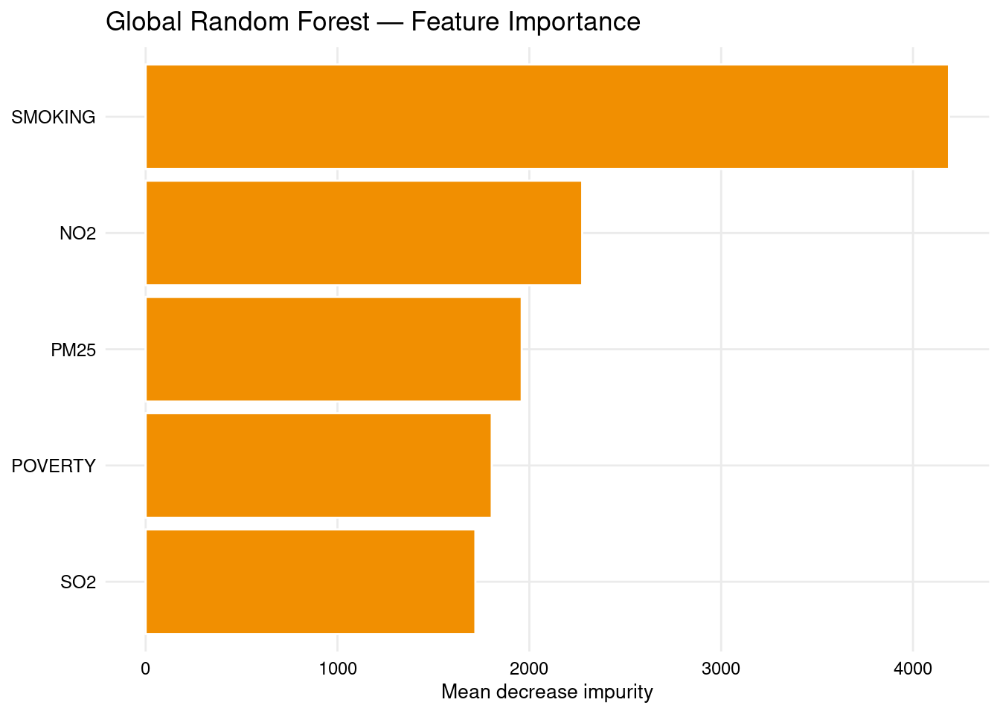
ggsave(file.path(OUT_DIR, "gwr_rf_global_importance.png"), p_imp, width = 7, height = 4, dpi = 150)
p_loc <- wrap_plots(lapply(COVARIATES, function(var) {
ggplot(gdf_sp) +
geom_sf(aes(fill = .data[[paste0("gwrf_imp_", var)]]), colour = "grey50", linewidth = 0.2) +
scale_fill_distiller(palette = "YlOrRd", direction = 1) +
labs(title = paste("GW-RF importance —", var), fill = NULL)
}), ncol = 3) +
plot_annotation(title = "Local Feature Importance (GW-RF)")
print(p_loc)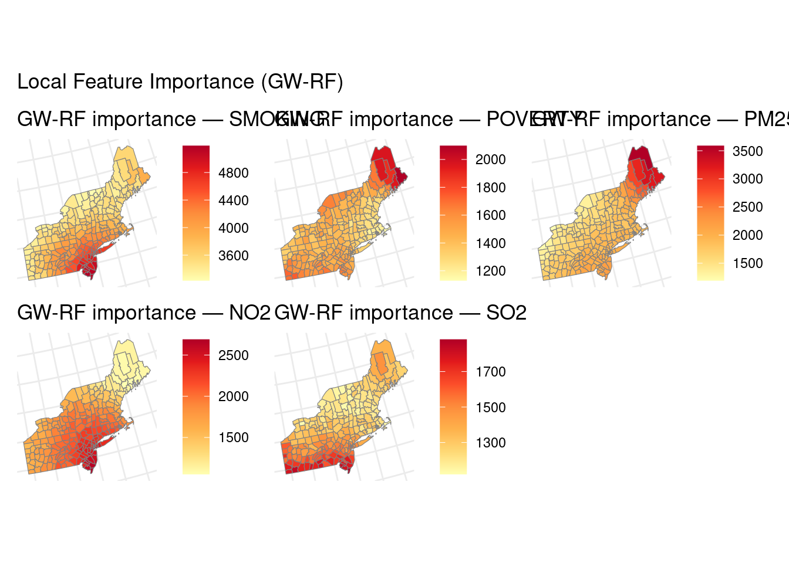
ggsave(file.path(OUT_DIR, "map_gwrf_local_importance.png"), p_loc, width = 15, height = 9, dpi = 150)10. Summary & Clinical Interpretation
Key findings (Northeast, 1998–2010): - Period-mean LBC mortality shows clear spatial structure; Gi* identifies significant hot and cold spots. - Bivariate LISA links local mortality clusters with neighbourhood poverty patterns. - SAR/SEM models indicate spatial dependence beyond standard OLS; compare AIC to choose specification. - GW-OLS reveals spatially varying associations — e.g., poverty effects may strengthen in urban corridors. - GW-RF highlights which environmental and behavioural drivers matter locally vs globally. - CHR 2025 covariates provide a contemporary SES/access overlay for the same county geography.
Caveats: Ecological (county-level) inference; rate smoothing not applied; island counties excluded from spatial weights; GW-RF is computationally intensive and should be validated with cross-validation in production workflows.
Extensions: BYM disease mapping, spatial cross-validation, GW-RF with spatial lag features, policy simulations.
Knowledge Check
- Why is Nantucket excluded from queen-contiguity analyses?
- Gi* hot spots vs LISA High-High clusters — when would they disagree?
- If SAR ρ is significant but SEM λ is not (or vice versa), which model do you report?
- A GW-OLS poverty coefficient turns negative in one sub-region. Is that necessarily a data error?
- GW-RF ranks PM2.5 higher locally than globally in coastal counties. What policy hypothesis does that suggest?